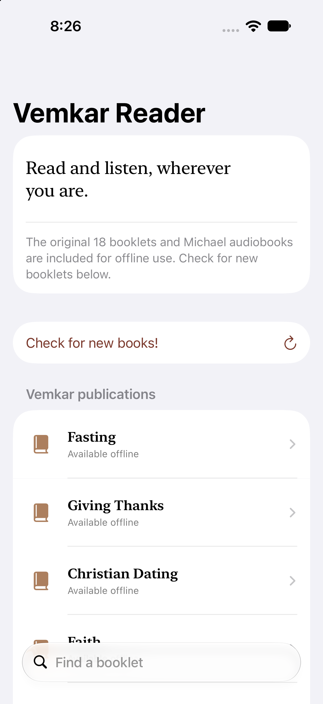
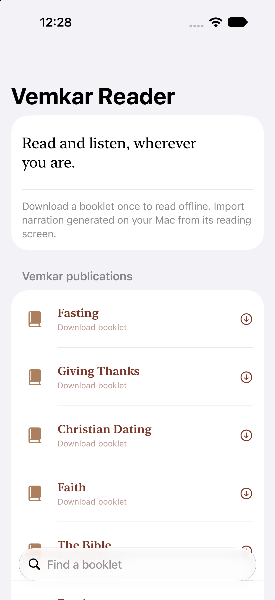

Vemkar Reader
Vibe-coded project: I supplied the idea, requirements, and feedback; AI wrote the implementation.
Vemkar is the Eastern Diocese of the Armenian Church of America’s educational and digital ministry platform, with booklets and other resources about Armenian Christian faith and traditions. I wanted an iPhone reader for its booklets, with locally generated audiobook narration so I could read or listen.

What it does
An independent personal-use iPhone/iPad prototype combines the original PDFs with adjustable text, bookmarks, saved reading position, audio controls, and synchronized word highlighting. Python tools generate Kokoro narration on the Mac; the app plays the bundled audio offline. It is not an official Vemkar app.
How it was built
Vibe-coded project: I supplied the idea, requirements, and feedback; AI wrote the implementation.
Technology: SwiftUI, PDFKit, AVFoundation; Python and Kokoro narration.
Current status
Ongoing. Reading and audio features continue to evolve. Simulator checks cover several interactions, but physical-device behavior and audio routing still need testing.
About the visual
The main image is an actual screenshot of the app running in the iPhone simulator. The gallery also includes an earlier prototype screenshot to show how the library changed. The workflow illustration is labeled separately.
